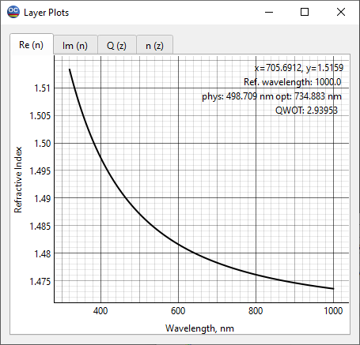

Layer Plots
The results of the layer characterization are presented in the Layer Plot window, which has four pages. The user can switch between these pages using the tabs at the top of the window. The layer thickness is displayed at the bottom of the window in different units.

The tab Re(n) opens the page that displays the wavelength dependence of the refractive index.
The tab Im(n) opens the page showing the film’s extinction coefficient.
The tab Q(z) opens the page presenting the inhomogeneity factor. There are two types of normalization for this factor. If the checkbox for Integral Normalization is checked, the inhomogeneity factor is normalized so that its integral value equals 1. If this checkbox is unchecked, the inhomogeneity factor is normalized such that the average of its boundary values is equal to 1.
The tab n(z) opens the page that represents the dependence of the refractive index on the film thickness at a specified wavelength. This wavelength is set in the Wavelength field located at the bottom of the page, with the default choice being the reference wavelength selected from the Configuration menu.
 Note: The Integral Normalization checkbox is essential only if
bulk inhomogeneity models are
used.
Note: The Integral Normalization checkbox is essential only if
bulk inhomogeneity models are
used.